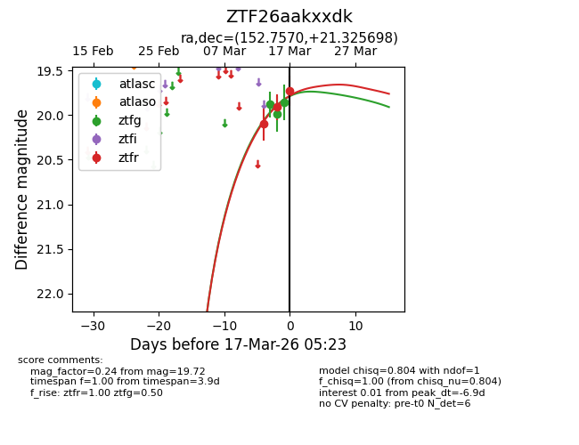
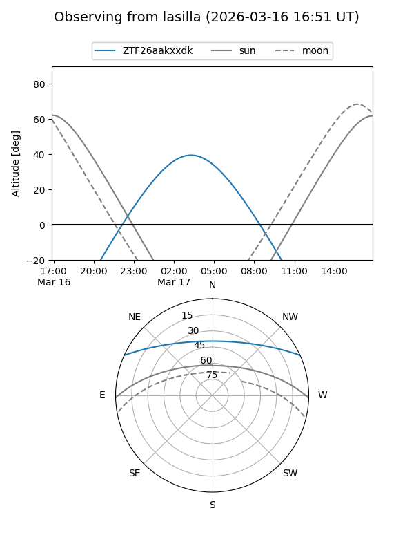
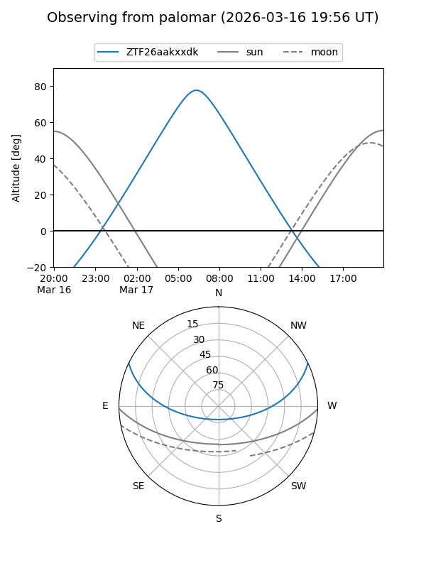
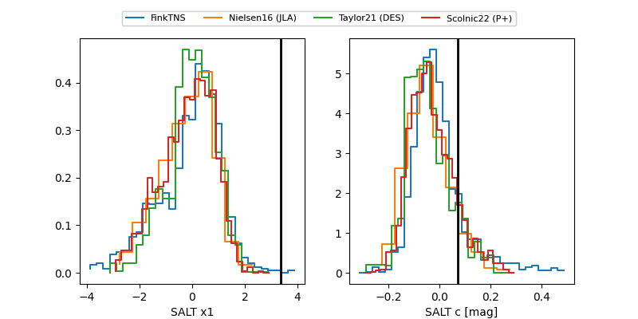

ZTF26aakxxdk
Target ZTF26aakxxdk at 2026-03-17 05:25
Aliases and brokers:
FINK: link
Lasair: link
ALeRCE: link
alt names
ZTF26aakxxdk (ztf,fink_ztf)
Coordinates:
equatorial (ra, dec) = 152.7570,+21.32570
equatorial (HMS+DMS) = 10:11:01.68,+21:19:32.51
galactic (l, b) = (213.0500,+53.12640)
Flags:
Photometry:
last ztfg=19.86, ztfr=19.72
3 ztfg, 3 ztfr detections
Lightcurve

Visibility


Additional plots
